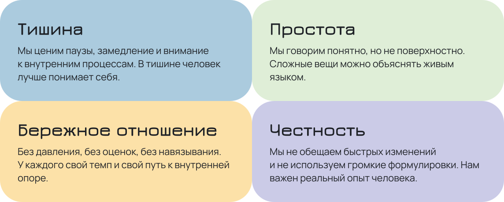

О нас
Bazis — медиа о внутренних опорах и тихой силе быть с собой. Мы создаём пространство, где человек может выдохнуть, услышать себя и почувствовать опору внутри, а не снаружи.
Bazis помогает научиться быть в уединении без тревоги, находить уют в тишине и строить отношения с собой так же бережно, как с близкими.
Ценности

Метафора
Bazis — это внутренняя конструкция, которая собирается постепенно. Не монолит и не идеальная форма, а система опор, которые поддерживают человека изнутри.
Графически эта идея выражается через скруглённые прямоугольники, соединённые между собой. Каждый блок — это отдельная часть опыта: мысли, чувства, границы, отдых. Вместе они создают устойчивую, но живую структуру.